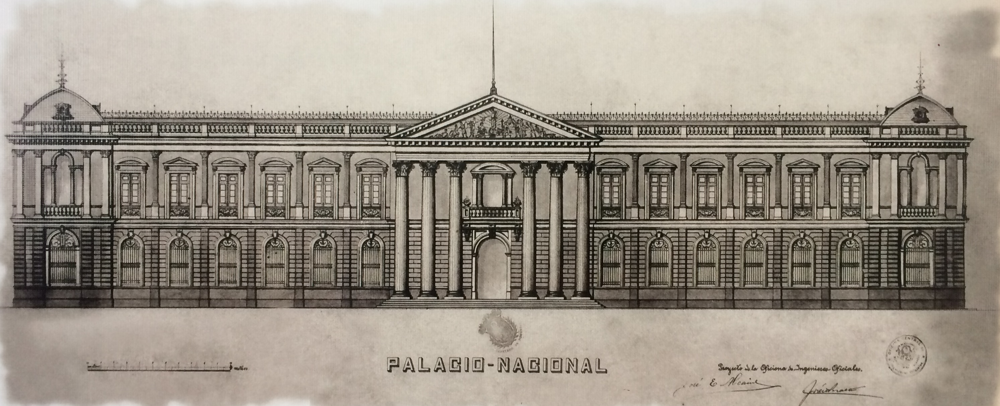
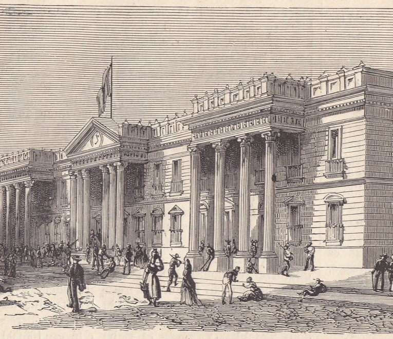
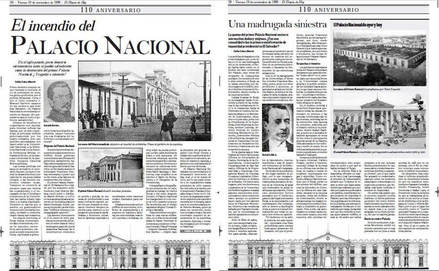
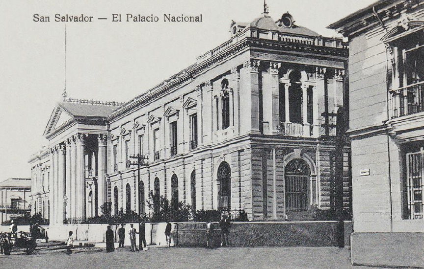

Palacio Nacional de El Salvador
  Durante la administración del General Gerardo Barrios (1860-1863), surgió la idea de construir
un palacio
nacional para albergar las diferentes dependencias gubernamentales de la época. Con este objetivo se
designaron las cuadras al oeste de la actual Plaza Barrios o Plaza Cívica.
El primer palacio se
construyó
entre 1866 y 1870.
Sin embargo, el 19 de noviembre de 1899, un incendio redujo el edificio a escombros; perdiéndose también
valiosos archivos históricos nacionales e invaluables obras de arte.
El actual Palacio Nacional fue diseñado por el ingeniero José Emilio Alcaine y fue construido
por Don
Pascasio González bajo el mando de Don José María Peral.
Fue construido entre 1905 y 1911 bajo la
dirección
de Don José María Peralta Lagos.
Su arquitectura es neoclásica, muy de moda a principios del siglo XX, y
esto se evidencia en sus volúmenes simétricos, detalles decorativos y distribución de espacios interiores
conectados por un patio central en forma de cruz griega.
Inaugurado el 1 de marzo de 1911, originalmente se llamó "Palacio del Café" porque un decreto
legislativo
estipulaba que por cada quintal de café exportado se invertiría un colón en su construcción.
Se
utilizaron
un total de 50.000 colones.
El edificio tiene un perímetro de 74 metros por cada lado y cuenta con un patio central en forma de cruz griega, dentro del cual se ubica el jardín central. Por su organización espacial se define como un claustro.
El palacio tiene 4 salas principales: roja, azul, rosa y amarilla, sesenta y cuatro salas
grandes, cuarenta
habitaciones pequeñas, ocho cuartos de servicio y dos grandes sótanos, uno al este y otro al oeste.
Entre las numerosas estancias, la Sala Roja y la Sala Azul destacan por su elegancia y belleza.
Sin duda la sala más lujosa y detallada de la República, la Sala Roja está ubicada encima del
salón principal
y forma parte de la gran escalera del palacio.
Su nombre se debe a que el rojo domina la decoración
junto
con el blanco y el dorado.
El salón de estilo renacentista francés es una combinación perfecta de
elementos
barrocos y clásicos.
El lujo y el gusto de esta estancia no envidian a otras estancias similares en
Europa y
América.

Salón Azul: Este histórico lugar, ubicado en el segundo piso del lado oeste del edificio, fue sede de la Asamblea Legislativa hasta 1974. En él predominan los colores de la República - azul y blanco, con una gran cantidad de decoraciones.
Salón Rosa: Donde funcionó la Corte Suprema hasta 1974. Salón Amarillo: Donde estuvo ubicada la Oficina del Presidente hasta 1930. Aquí se llevan a cabo reuniones de negociación y recepción del personal diplomático y otras funciones.